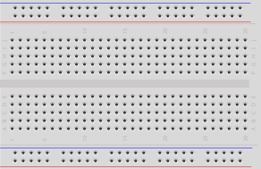
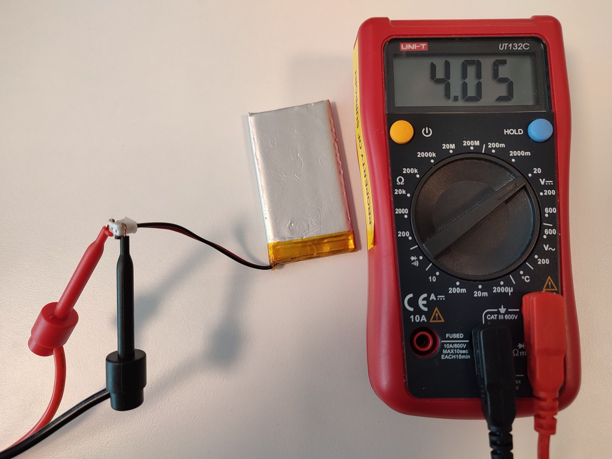
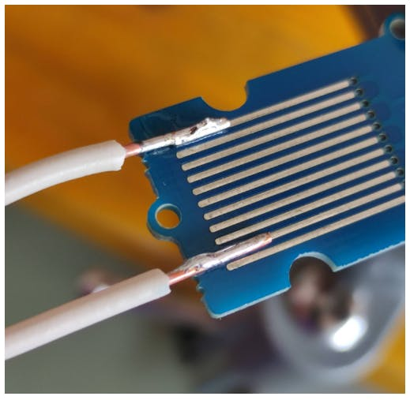

جعبهابزار: سختافزار، نرمافزار و هوش مصنوعی
لازم نیست همه اینها را از روز اول داشته باشی. کنار هر ابزار نوشتهایم در کدام درس به آن نیاز پیدا میکنی و چقدر ضروری است.
ابزار سختافزاری

برد بورد و سیم جامپر
ساخت مدار بدون لحیم. یک برد بورد ۸۳۰ سوراخ (یا دو تا نیمسایز) و سیمهای نر به نر، نر به ماده و ماده به ماده.
ضروریاز درس ۲.۳

مولتیمتر
چشم تو در دنیای برق: ولتاژ، جریان، مقاومت و قطعی سیم (حالت بوق) را اندازه میگیرد. یک مولتیمتر دیجیتال ساده کافی است.
خیلی مهمعیبیابی و درس ۶.۱
تصویر: Arduino Docs، CC BY-SA 4.0

کیت لحیمکاری
هویه قلمی با کنترل دما (حدود ۳۰۰ تا ۳۵۰ درجه)، سیم لحیم ۰٫۸ میلیمتری با روغن، پایه هویه، اسفنج یا سیم برنجی. برای لحیم کردن پینهدر ماژولها لازم میشود.
بعد از فصل ۲
تصویر: Arduino Docs، CC BY-SA 4.0
قطعات پایه
LED در چند رنگ، مقاومت ۲۲۰ اهم و ۱۰ کیلو اهم، دکمه فشاری، پتانسیومتر ۱۰ کیلو، LDR، بازر.
ضروریفصل ۲ و ۳
ماژولها
DHT22، نمایشگر OLED SSD1306، سروو SG90، ماژول کارت microSD، ماژول GPS NEO-6M، ماژول رله، ESP32-CAM.
فصل ۳ به بعد
🔌 کابل USB «دیتا»
بسیاری از کابلهای ارزان فقط شارژ میکنند و سیم داده ندارند. اگر کامپیوتر برد را نمیبیند، اول کابل را عوض کن.
ضروری
لیست خرید دقیق (برای کل دوره)
این لیست را مرحلهای بخر: ردیفهای «مرحله ۱» برای فصل ۱ تا ۳ کافیاند. قبل از خرید، درس ۱.۲ (انتخاب برد و نکتههای خرید) و درس ۱.۴ (کارگاه عملی) را بخوان.
| قطعه | تعداد | مرحله | کجا لازم است | نکته خرید |
|---|---|---|---|---|
| برد ESP32 DevKit (WROOM-32، ۳۰ یا ۳۸ پایه) | ۲ | ۱ | کل دوره؛ دومی برای ESP-NOW (۵.۲) | مدل دارای تراشه CP2102 یا CH340 و کانکتور USB سالم؛ عکس پشت برد را از فروشنده بخواه |
| کابل USB «دیتا» (Micro-USB یا USB-C مطابق برد) | ۱ تا ۲ | ۱ | آپلود برنامه | کابل شارژی ارزان دیتا ندارد؛ کوتاه و ضخیم بهتر است |
| برد بورد ۸۳۰ سوراخ | ۲ | ۱ | همه مدارها | برد ۳۸ پایه روی یک برد بورد جا نمیشود؛ دو برد بورد کنار هم (درس ۱.۴) |
| سیم جامپر نر-نر، نر-ماده، ماده-ماده | از هر کدام ۲۰ عدد | ۱ | همه مدارها | رنگی بخر تا قانون رنگ سیم را رعایت کنی |
| مولتیمتر دیجیتال | ۱ | ۱ | درس ۱.۴ و همه عیبیابیها | حتما حالت بوق (Continuity) داشته باشد |
| LED ۵ میلیمتری (قرمز، زرد، سبز، آبی) | ۱۰ عدد | ۱ | ۲.۳، ۳.۱، ۳.۲ | — |
| مقاومت ۲۲۰ اهم، ۱ کیلو، ۱۰ کیلو، ۴٫۷ کیلو، ۲۰ کیلو | از هر کدام ۱۰ عدد | ۱ | LED، Pull-up، تقسیم ولتاژ، ترانزیستور | یک کیت مقاومت ¼ وات همه را دارد |
| دکمه فشاری ۴ پایه (۶×۶ میلیمتر) | ۵ | ۱ | ۲.۲، ۳.۱، ۵.۲، ۶.۱ | — |
| پتانسیومتر ۱۰ کیلو | ۲ | ۱ | ۳.۱، ۳.۲، ۴.۲ | مدل سه پایه قابل نصب روی برد بورد |
| مقاومت نوری LDR (یا ماژول LDR) | ۲ | ۱ | ۳.۱، پروژه نهایی | — |
| بازر پسیو | ۱ | ۱ | ۳.۲، پروژه نهایی | پسیو (بدون نوسانساز داخلی) تا بتوانی نت بزنی |
| سنسور DHT22 (AM2302) | ۱ | ۲ | ۳.۳، ۵.۱، ۶.۱، ۶.۳ | نسخه ماژول سه پایه مقاومت Pull-up دارد |
| نمایشگر OLED ۰٫۹۶ اینچ SSD1306 با I2C | ۱ | ۲ | ۳.۳، پروژه نهایی | مدل ۴ پایه (GND، VCC، SCL، SDA)، نه مدل ۷ پایه SPI |
| سروو SG90 | ۱ | ۲ | ۳.۲ | — |
| ماژول کارت microSD (SPI) + کارت حداکثر ۳۲ گیگ | ۱ | ۲ | ۳.۳، ۵.۳ | کارت را FAT32 فرمت کن |
| ماژول GPS NEO-6M با آنتن | ۱ | اختیاری | ۳.۳ | فقط زیر آسمان باز موقعیت میگیرد |
| ترانزیستور NPN (2N2222 یا S8050) و دیود 1N4007 | از هر کدام ۵ | ۲ | ۳.۴ | — |
| ماسفت Logic-Level (مثلا AO3400 روی ماژول، یا IRLZ44N) | ۲ | ۲ | ۳.۴ | IRF540N و IRFZ44N با ۳٫۳ ولت کامل روشن نمیشوند (درس ۳.۴) |
| ماژول رله ۵ ولت تککاناله با اپتوکوپلر | ۱ | ۲ | ۳.۴، ۴.۲ | فقط با بار کمولتاژ تمرین کن، نه برق شهر |
| موتور DC کوچک + درایور TB6612FNG یا DRV8833 | ۱ | ۲ | ۳.۴ | L298N هم کار میکند ولی قدیمی و کمبازده است |
| موتور پلهای 28BYJ-48 + برد ULN2003 | ۱ | ۲ | ۳.۴ | معمولا با هم فروخته میشوند |
| نوار یا حلقه LED آدرسپذیر WS2812B | ۸ تا ۳۰ LED | ۲ | ۳.۴ | با منبع ۵ ولت جدا؛ حساب جریان در درس ۳.۴ |
| خازن ۱۰۰ نانو، ۱۰ میکرو و ۴۷۰ تا ۱۰۰۰ میکروفاراد | از هر کدام ۵ | ۲ | ۱.۴، ۳.۲، ۳.۴ | ولتاژ خازن الکترولیتی حداقل ۱۰ ولت |
| ماژول مبدل سطح ولتاژ دوطرفه (BSS138، ۴ کانال) | ۱ | ۲ | ۱.۴ | برای سنسورهای ۵ ولتی |
| منبع تغذیه ۵ ولت ۲ آمپر (آداپتور + ماژول برد بوردی) | ۱ | ۲ | سروو، موتور، LED آدرسپذیر، ESP32-CAM | زمین آن را با GND برد ESP32 مشترک کن |
| ESP32-CAM (AI-Thinker) + برد برنامهریزی ESP32-CAM-MB | ۱ | ۳ | ۵.۳ | برد MB برنامهریزی را خیلی سادهتر میکند |
| باتری لیتیومی (18650 یا LiPo) + شارژر TP4056 با محافظ + رگولاتور LDO کممصرف | ۱ ست | ۳ | ۶.۱ | نکتههای ایمنی باتری در درس ۶.۱ |
| کیت لحیمکاری (هویه با کنترل دما، سیم لحیم، پایه، فتیله قلعکش) | ۱ | ۲ | درس ۱.۴ | بیشتر ماژولها پینهدر لحیمنشده دارند |
ارزانترین قطعه همیشه ارزانترین انتخاب نیست. یک کابل USB بد یا یک برد بورد شل، ساعتها وقت عیبیابی از تو میگیرد. از فروشندهای بخر که قطعه خراب را پس بگیرد، و از قطعههای پرمصرف (LED، مقاومت، سیم جامپر) چند عدد اضافه داشته باش. سوختن قطعه در یادگیری طبیعی است.
نرمافزار
| ابزار | کاربرد | درس |
|---|---|---|
| Arduino IDE 2 | نوشتن و آپلود برنامه؛ بهترین شروع | ۲.۱ |
| VS Code + PlatformIO | محیط حرفهای برای پروژههای بزرگتر | ۲.۱ |
| Wokwi | شبیهساز آنلاین ESP32 و قطعات، حتی با Wi-Fi مجازی | ۲.۲ |
| Fritzing | کشیدن نقشه سیمکشی روی برد بورد (تصویرهای قطعه این سایت از کتابخانه Fritzing است) | مستندسازی |
| EasyEDA | طراحی شماتیک و PCB آنلاین، متصل به فروشگاه LCSC | بعد از دوره |
| KiCad | طراحی حرفهای و رایگان PCB؛ آموزش فارسی آن روی همین سایت هست | بعد از دوره |
| MQTT Explorer | دیدن و فرستادن پیامهای MQTT روی کامپیوتر | ۵.۱ |
| nRF Connect (اندروید و iOS) | تست BLE: دیدن سرویسها و مشخصهها | ۴.۳ |
| Serial Bluetooth Terminal (اندروید) | ترمینال بلوتوث کلاسیک | ۴.۳ |
ابزارهای هوش مصنوعی
هوش مصنوعی با اطمینان کامل پین اشتباه، کتابخانه قدیمی یا سیمکشی ۵ ولتی خطرناک پیشنهاد میدهد. فقط وقتی میتوانی درست از آن استفاده کنی که بتوانی جوابش را قضاوت کنی. برای همین هوش مصنوعی در فصل آخر (درس ۶.۲) آمده است.
Claude
توضیح کد، پیدا کردن خطا، نوشتن کد با توضیح. Claude Code میتواند مستقیم روی پوشه پروژه کار کند.
ChatGPT و Custom GPTها
پرسش و پاسخ عمومی و GPTهای ساختهشده برای آردوینو و ESP32. خروجی را همیشه با چکلیست درس ۶.۲ بررسی کن.
دستیار هوش مصنوعی Wokwi
کمک به ساخت مدار و کد داخل خود شبیهساز، تا بلافاصله نتیجه را تست کنی.
GitHub Copilot
تکمیل خودکار کد داخل VS Code کنار PlatformIO.